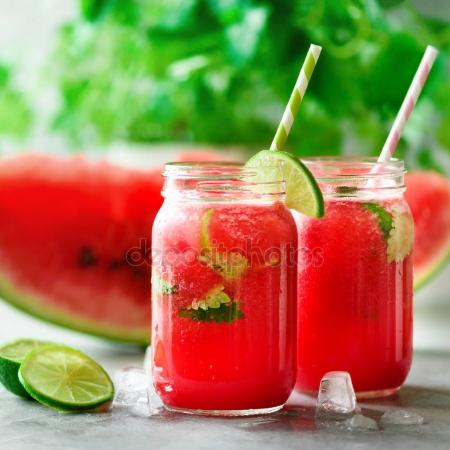

Passion sunrise
Ingrediënten
- Groenten/Fruit
- Vloeistoffen
- 2 eetl. grenadine
- 20 cl sinaasappellimonade
- 1 ijsblokje

Bereiding
- Doe het ijsblokje ne het vruchtvlees van de halve passievrucht in een londrinkglas.
- Voeg de grenadine toe.
- Giet er daarna de sinaasappellimonade langs de bolle kant van een lepel bij voor een mooi kleureffect.